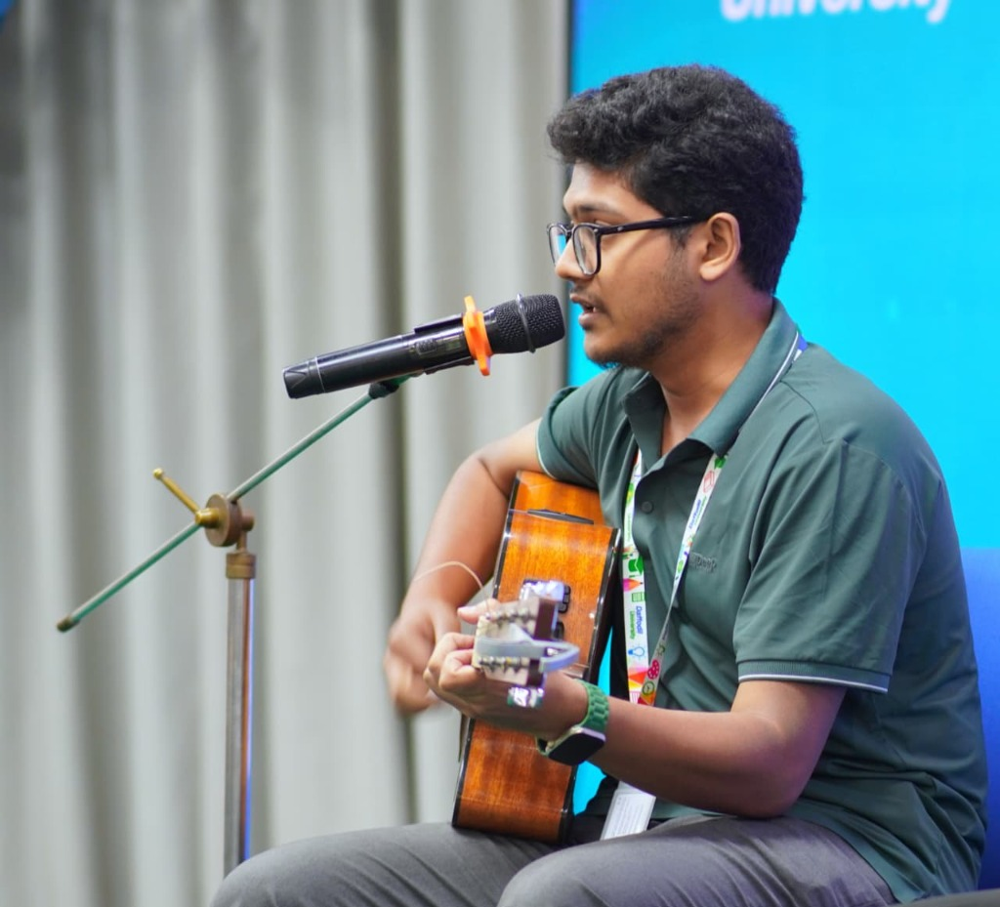
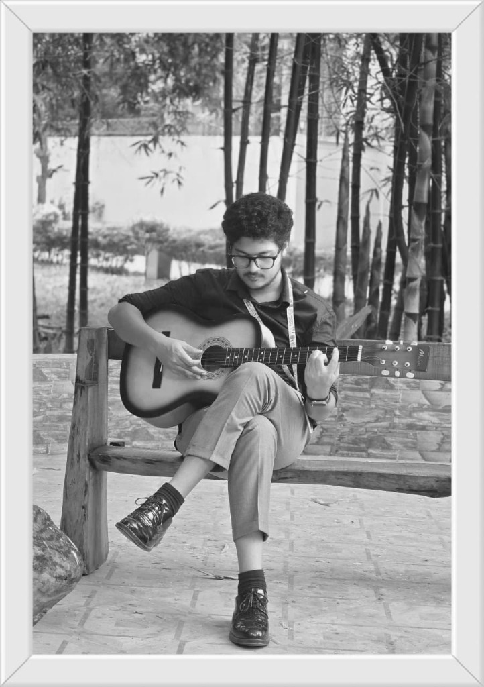

VIDEO SCRIPT
Spring 2026
My Video Resume Script
Complete scene-by-scene script detailing my undergraduate EEE narrative, IEEE stage anchoring clips, circuit projects, and musical philosophy.
I am Md. Touhidur Rahman Shiyam, an undergraduate student pursuing my B.Sc. in Electrical and Electronic Engineering (EEE) at Daffodil International University (DIU). While my academic core is deeply rooted in engineering analysis, circuit theory, and technical precision, I thrive at the unique intersection of science and creative communication.
As an official event anchor for the IEEE PES DIU Student Branch Chapter, I moderate technical symposiums, host international webinars, and bridge the gap between complex engineering topics and wide audiences. Simultaneously, I am dedicated to modern web development—crafting accessible, responsive web interfaces—while finding artistic balance through acoustic guitar and vocal melodies.

B.Sc. in EEE • IEEE PES DIU SBC • 1080p FHD Preview
Watch my video resume for a comprehensive overview of my academic qualifications, IEEE PES anchoring experience, technical skills, and career aspirations.
Designed for prospective recruiters, engineering faculty, and event organizers seeking a dynamic demonstration of my public presence, communication poise, and technical vision.
Formal electrical engineering coursework, science fundamentals, and specialized technical certifications.
Daffodil International University (DIU)
Rigorous engineering curriculum focused on Circuit Analysis, Semiconductor Devices, Signals and Systems, Microcontroller Programming, Electrical Power Transmission, and MATLAB simulation.
Science Group
Comprehensive foundation in Physics, Advanced Mathematics, Chemistry, and Information & Communication Technology, establishing analytical and mathematical problem-solving competencies.
Engineering hardware designs, Proteus circuit simulations, and clean web development practices.
A specialized event management and speaker coordination platform developed for the IEEE PES DIU Student Branch Chapter to manage attendees, registration passes, and publish technical conference highlights.
High-performance responsive personal web platform created with fluid glassmorphism aesthetics, intuitive category views, instant dark/light themes, and refined interactive UI components.
Official leadership responsibilities, stage hosting, and organizational contributions.
Driving business outreach and customer acquisition at Tarunno Tech by managing communications, nurturing international client relationships, and successfully converting foreign prospective leads for tech and digital services.
IEEE Power & Energy Society (PES) Daffodil International University SBC
Serving as the frontline voice of the chapter for major academic and technical ceremonies. Moderated flagship seminars, coordinated panel discussions with visiting scholars from international universities, and maintained engaging audience rapport.
Daffodil International University (DIU)
Actively participated in campus logistics, workshop registrations, and peer mentorship sessions for first-year engineering students exploring circuit laboratory fundamentals and study frameworks.
Key symposiums, IEEE workshops, and technical seminars hosted and attended.
Conducted virtual and on-campus webinars featuring keynote lectures on renewable microgrids and smart power systems.
Demonstrated automated sensor-actuated hardware prototypes and exchanged circuit schematics with university evaluators.
Competed in collegiate-level analytical problem solving covering mechanics, electromagnetic induction, and thermodynamics.
Recognitions earned in public anchoring, singing, science fairs, and poetry recitation.
Awarded for exceptional ceremonial moderation and vocal fluency during IEEE PES DIU SBC grand inaugurations.
Secured top positions in regional and campus cultural acoustic singing competitions for melodic control and performance.
Recognized for emotive expression, rhythm, and classical Bangla poetry recitation in youth literary summits.
Creative pursuits, community facilitation, and cultural initiatives beyond the classroom.
Hosting collegiate cultural fests, acoustic musical evenings, and open mic gatherings, uniting creative artists and university students.
Leading fingerstyle acoustic guitar sessions and vocal harmonization on campus to foster a community of passionate music enthusiasts.
Guiding junior peers on public speaking confidence, slide design best practices, and effective presentation delivery for engineering juries.
Categorized breakdown of engineering tools, communication strengths, and linguistic fluency.
Exemplary spoken articulation, formal stage delivery, and classical literature recitation.
Fluent moderation of international webinars, technical documentation reading, and academic presentations.
The musical roots that inspire patience, harmony, and creative lateral thinking.

Playing fingerstyle acoustic chords provides meditative clarity. Exploring chord voicings and open tunings cultivates an intuitive understanding of resonance and timing that translates into disciplined programming.
Singing unplugged classics and Bengali melodies fuels my stage charisma. Pitch control, diaphragm breath support, and dynamic modulation enhance my anchoring and communication versatility.
Reflections from academic supervisors, IEEE branch counselors, and student collaborators.
"Shiyam stands out for his exceptional poise and communicative intelligence. Whenever IEEE PES DIU SBC hosts high-level international dignitaries, he anchors with commanding fluency, deep preparation, and absolute professionalism."
Department of EEE, Daffodil International University
"Working with Shiyam on hardware circuit implementations and software models is inspiring. He doesn't merely analyze schematics; he explains complex principles clearly and ensures every deliverable meets the highest visual and technical standards."
Engineering Collaborator, DIU
A curated repository of speech scripts, video resume outlines, and engineering essays.
Complete scene-by-scene script detailing my undergraduate EEE narrative, IEEE stage anchoring clips, circuit projects, and musical philosophy.
Exploring why signal filtering, waveform frequencies, and acoustic guitar harmonics represent identical mathematical principles.
Key strategies for introducing international scholars, improvising through technical glitches, and sustaining dynamic stage energy.